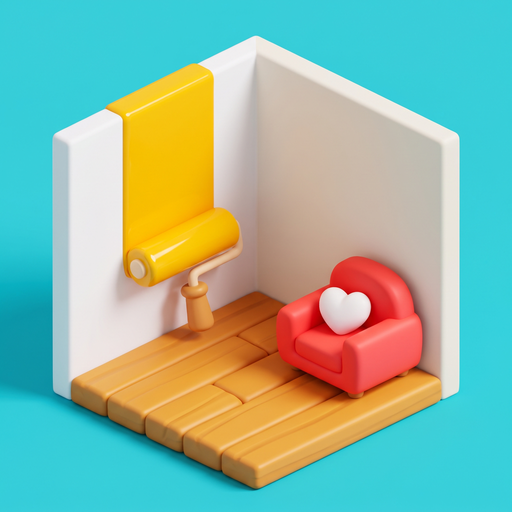

Soft Spot
Milo has just started out as a home stylist. Thirty clients, thirty homes: move and turn the furniture, paint the walls, lay new floors, add windows and doors, even build new walls, until every point on the client's brief has a green check. Between chapters, Mom calls. And when you just want to build, Free mode lets you make an apartment of your own.
Questions? alishersv.dev@outlook.com
«Soft Spot»
Уютная игра про обустройство комнат для iPhone. Тридцать клиентов, тридцать домов: двигайте мебель, красьте стены, меняйте пол, добавляйте окна и двери и даже стройте новые стены, пока каждый пункт задания клиента не получит зелёную галочку. Между главами звонит мама. А в свободном режиме можно обустроить собственную квартиру.